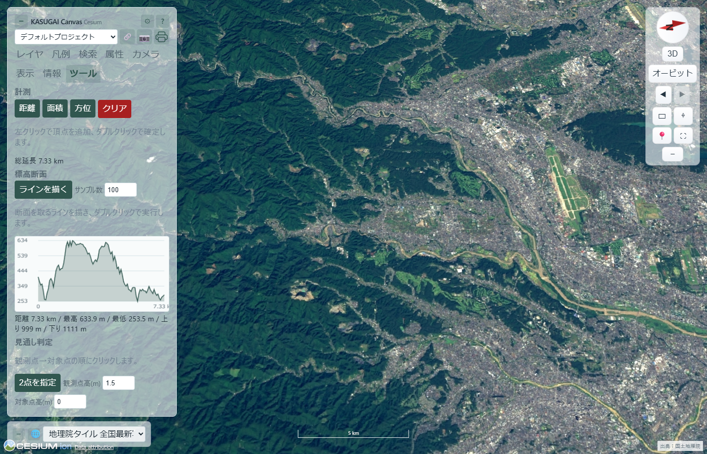

レイヤパネルの🧰ボタンで開くツールドックの「標高断面」パネルです。すべてブラウザ完結・静的配信のみで動作します。
使い方
📈 標高断面
「ラインを描く」で折れ線を入力すると距離-標高の断面グラフを表示します（サンプル数 10〜500・既定100）。地形 ON 時は TerrainProvider、OFF 時や未対象域は地理院標高APIへフォールバックします。グラフ上のホバー位置は地図上のマーカーと連動し、最高/最低/累積上り・下りの統計も表示します。

対応エンジン
Cesium・MapLibre・OpenLayers・Leaflet・GSI Maps（2D エンジンは MapLibre の DEM タイルまたは地理院標高APIで標高サンプリング）。Navara は未提供です。AI からは elevationProfile で実行できます（5-3 AI ツール仕様）。
設定方法
このツールは .kasc の設定行を持ちません（UI 操作のみです）。関連するレイヤー設定は 6-2 インスペクター を参照してください。